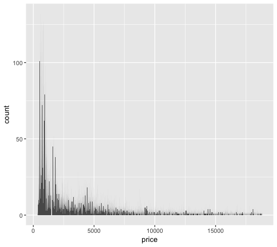
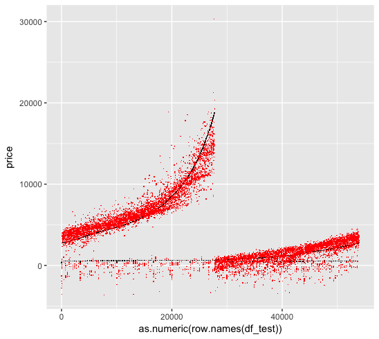
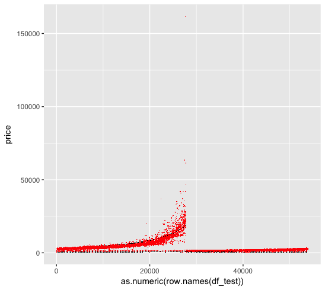
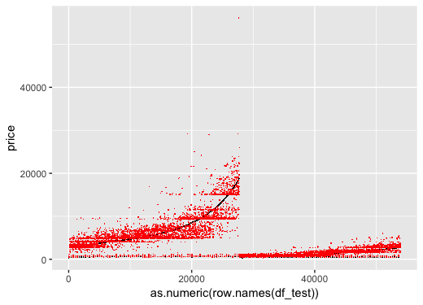
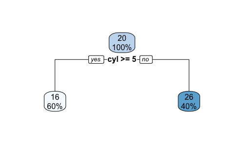
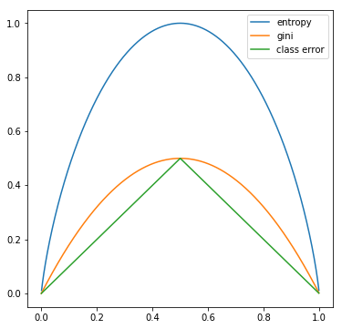
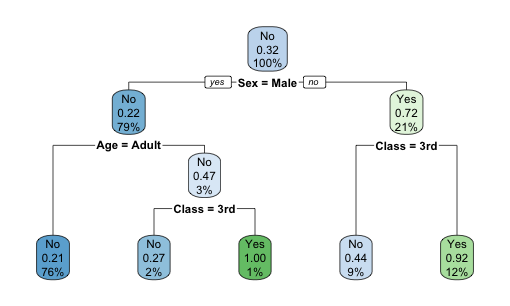
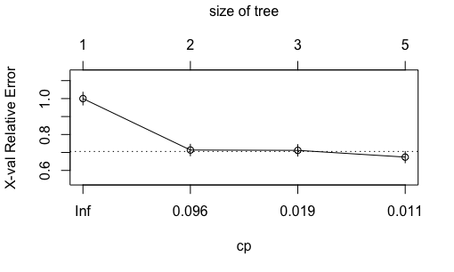
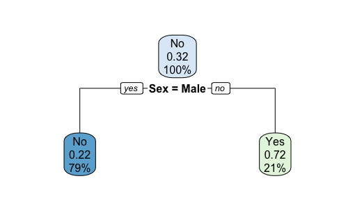
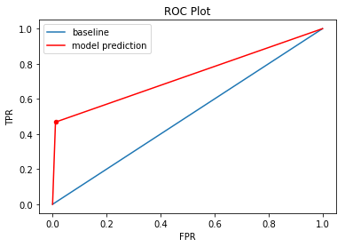

Notes on ISLR
This is a study note on the book An Introduction to Statistical Learning with Applications in R, with my own experimental R-code for each topic.
Update: Please do not hesitate to let me know if you spot any error on this page via comment or email. Cheers!
00. Introduction 01. Linear Model 02. Tree-Based Method 03. Unsupervised Learning
Introduction ↺
Suppose we observe a quantitative response $Y$ and $p$ different predicting variables $X = (X_1, X_2…X_p)$. We assume that there is a underlying relationship $f$ between $Y$ and $X$:
$$Y=f(X) + \epsilon$$
We want to estimate $f$ mainly for two purpose:
prediction: in the case where $Y$ is not easily obtained, we want to estimate $f$ with $\hat{f}$, and use $\hat{f}$ to predict Y with $\hat{Y}$. Here $\hat{f}$ can be a black box, such as highly non-linear approaches which offers accuracy over interpretability.
$$ \hat{Y} = \hat{f}(X) $$
inference: in the case where we are more interested in how $Y$ is affected by the change in each $X_n$. We need to know the exact form of $\hat{f}$. For example, linear model is often used which offer interpretable inference but sometimes inaccurate.
Feature
There are important and subtle differences between a feature and a variable.
variable: raw datafeature: data that is transformed, derived from raw data. A feature can be more predictive and have a direct relationship with the target variable, but it isn’t immediately represented by the raw variable.
The need for feature engineering arises from limitations of modeling algorithms:
- the curse of dimensionality (leading to statistical insiginificance)
- the need to represent the signal in a meaningful and interpretable way
- the need to capture complex signals in the data accurately
- computational feasibility when the number of features gets large.
Feature Transformation
The Occam’s Razor principle states that a simpler solutions are more likely to be corret than complex ones.
Consider the following example of modeling a exponentially distributed response. After applying a log transformation, we can view the relation from a different viewpoint provided by the new feature space, in which a simpler model may achieve more predictive power than a complex model in the original input space.
1 | x1 <- runif(100, 1,10) |

Consider another classification problem, in which we want to identify the boundary between the two classes. A complex model would draw a circle as the divider. A simpler approach would be to create a new feature with distances of each point from the origin. The divider becomes a much simpler straight line.
1 | x1 <- runif(1000,-1,1) |

Feature Selection
For $p$ predictive variables, there are a total of $2^p$ models. We use feature selection to choose a smaller subset of the variable to model.
Forward SelectionWe begin with the null model with no variables and an intercept. We then fit $n$ simple linear regression to choose our first variable with the lowest $RSS$. Same way to choose the next variable to be added until some stoppoing rule.Backward SelectionWe begin with the full model and remove the variable with the largest coefficient $p$-value. Re-fit and remove the next.Mixed SelectionWe begin with the null model and the forward selection technique. Whenever the p-value for a variable exceeds a threshold we remove it.
Regression Problems
In regression problems the variables are quantitative, we use mean squared error, or $MSE$, to measure the quality of estimator $\hat{f}$:
$$ MSE = \dfrac{\sum_{i=1}^n [y_i - \hat{f}(x_i)]^2}{n}$$
A fundamental property of statistical learning that holds regardless of the particular dataset and statistical method is that as model flexibility increases, we can observe a monotone decrease in training MSE and an U-shape in test $MSE$.
Bias vs Variance
The bias-variance trade off decompose the expected test MSE of a single data point $x_0$:
$$\begin{align} \mathbb{E}MSE^{test}(x_0) &= \mathbb{E}[y_0 - \hat{f}(x_0)]^2 \ &= Var[\hat{f}(x_0)] + Bias[\hat{f}(x_0)]^2 + Var[\epsilon] \end{align}$$
where:
variancerefers to the variance of the estimator among different datasets. A highly flexible $\hat{f}$ lead to a high variance, as even small variance in data induce change in the $\hat{f}$’s form.biasrefers to the error due to estimator $\hat{f}$ inflexibility. For example, using linear $\hat{f}$ to estimate non-linear relationship leads to high bias.
Classification Problems
In regression problems the variables are qualitative, we use error rate to measure the quality of estimator $\hat{f}$:
$$ \text{error rate} = \dfrac{\sum_{i=1}^n \textbf{1}{y_i \neq \hat{f}(x_i)}}{n}$$
The Bayes Classifier
The Bayes classifier predict the classification based on the combination of the prior probability and its likelihood given predictor values. With categories $C_1, C_2, C_3…$, and predictor values $\textbf{x} = (x_1, x_2, x_3…)$, $\hat{y}$ is assigned to category $C_k$ which has the maximum posterior probability:
$$\hat{y} = \hat{f}^{Bayes}(\textbf{x}) = C_k, ;where; k = argmax_k ;p(C_k | \textbf{x})$$
Where:
$$ p(C_k | \textbf{x}) = \dfrac{p(x_1, x_2, x_3…|C_k)p(C_k)}{p(x_1, x_2, x_3…)}$$
The naive Bayes classifier assumes independence between the predictor $X_i$’s, and the formula becomes:
$$\hat{y} = \hat{f}^{naiveBayes}(\textbf{x}) = C_k, where; k = argmax_k ;p(C_k) \times \prod p(x_i | C_k)$$
When $x_i$ is continuous, the Guassian naive Bayes classifier assumes that $ p(x_i | C_k) \sim \mathcal{N}(\mu_{i, C_k}, \sigma^2_{i, C_k})$
In R, we use the naiveBayes function from the e1071 package to predict Survival from the Titanic dataset.
1 | library(e1071) |
Viewing the model results, the prior probabilities $p(C_k)$ are shown in the “A-priori probabilities” section.
1 | > bayes |
The likelihood $p(x_i | C_k)$ are shown in the “Conditional probabilities” section
1 | Conditional probabilities: |
The confusionMatrix function from the caret package returns a test Accuracy of 0.7978, which corresponds to an Bayes error rate of 0.2023.
$$ \text{error rate}^{Bayes} = 1 - \mathbb{E}max_k;p[Y=C_k|X=(x_1, x_2, x_3…)]$$
Theoretically, the Bayes classifier produces the lowest error rate if we know the true conditional probability $p(C_k | \textbf{x})$, which is not the case with real data. Therefore, the Bayes classifier serves as an unattainable gold standard against which to compare other methods.
1 | > confusionMatrix(predict(bayes, test), test$Survived) |
With 10-fold cross validation, the test error rate is 0.2095.
1 | > confusionMatrix(predict(bayes.cv, test), test$Survived) |
K-Nearest Neighbors
The KNN classifier estimate the conditional probability $p(C_k | \textbf{x})$ based on the set of K predictors in the training data that are the most similar to $\textbf{x}$, representing by $\mathcal{N}$.
$$\hat{y} = \hat{f}^{KNN}(\textbf{x}) = C_k, ;where; k = argmax_k ;p(C_k | \textbf{x}) \ with; p(C_k | \textbf{x}) = \dfrac{\sum_{i\in\mathcal{N}}\textbf{1}_{y_i = C_k}}{K}$$
Note that the $p(C_k | \textbf{x})$ is one minus the $\mathcal{N}$-local error rate of a $C_k$ estimate , and therefore with KNN we are picking the $C_k$ that minimizes the $\mathcal{N}$-local error rate given $\textbf{x}$.
When $K=1$, the estimator $\hat{f}^{KNN}$ produces a training error rate of $0$, but the test error rate might be quite high due to overfitting. The method is therefore very flexible with low bias and high variance. As $K\rightarrow\infty$, the estimator becomes more linear.
In R, we use the knn function (with K=1) in the class library to predict Survival from the Titanic dataset.
1 | library(e1071) |
The confusion matrix shows an error rate of 0.1942.
1 | > confusionMatrix(knn, df_test_cl) |
Now run KNN with the tune wrapper to perform 10-fold cross validation. The result recommends KNN with K=1, which turns out to be the same as what we originally tested.
1 | > knn.cv |
Summarizing the test error rate for naiveBayes and KNN.
1 | naiveBayes (cv10): 0.2095 |
Linear Model ↺
Simple Linear Regression
A simple linear regression assumes that:
$$ Y \sim \beta_0 + \beta_1X $$
Coefficient Estimate
Given data points $(x_i, y_i)$, let $\hat{y_i} = \hat{\beta_0} + \hat{\beta_1}x_i$. We define the residual sum of squares, or $RSS$, as:
$$ RSS = \sum (y_i - \hat{y_i})^2 $$
Minimizing $RSS$ as an objective function, we can solve for $\hat{\beta_0}, \hat{\beta_1}$:
$$\begin{align} \hat{\beta_1} &= \dfrac{\sum (x_i - \bar{x})(y_i - \bar{y})}{\sum (x_i-\bar{x})^2} \ \hat{\beta_0} &= \bar{y} - \hat{\beta_1}\bar{x} \end{align}$$
Coefficient Estimate - Gaussian Residual
Furthermore, if we assume the individual error terms are i.i.d Gaussian, i.e.:
$$ Y = \beta_0 + \beta_1x + \epsilon \ \text{where, } \epsilon \sim \mathcal{N}(0, \sigma^2)$$
We now have a conditional pdf of $Y$ given $x$:
$$ p(y_i|x_i; \beta_0, \beta_1, \sigma^2) = \dfrac{1}{\sqrt{2\pi\sigma^2}}e^{-\dfrac{[y_i - (\beta_0 + \beta_1x_i)]^2}{2\sigma^2}}$$
The maximum log-likelihood estimator $\hat{l}$for the paramter estimate $b_0$, $b_1$, and $s^2$ can be computed as follow:
$$\begin{align} \hat{l}(b_0, b_1, s^2| x_i, y_i) &= log \prod p(y_i|x_i; b_0, b_1, s^2) \ &= -\dfrac{n}{2}log{2\pi} - nlogs - \dfrac{1}{2s^2}\sum [y_i - (b_0+b_1x)]^2 \end{align}$$
Setting the partial-derivative of the estimator with respect to each of the parameter to zero, we can obtain the maximum likelihood parameters:
$$\begin{align} \hat{\beta_1} &= \dfrac{\sum (x_i - \bar{x})(y_i - \bar{y})}{\sum (x_i-\bar{x})^2} \ \hat{\beta_0} &= \bar{y} - \hat{\beta_1}\bar{x} \ \hat{\sigma^2} &= \dfrac{1}{n}\sum [y_i - (b_0+b_1x_i)]^2 \end{align}$$
MLE, or maximum likelihood estimation, is a frequentist approach for estimating model parameters based on the assumed underlying model form and error distribution, by maximizing the probability of seeing what we saw in the data. MLE is a near-optimal method of estimation, and is optimal in many cases.
If we assume a Gaussian error distribution and a linear model, then the conclusion above states that maximizing the MLE objective function is the SAME as minimizing the RSS objective function.
More on frequentist vs Bayesian in this SOA work paper. Also see this CMU lecture note and for more detail regarding the derivation.
Model Fit
Recall that we assume there is a underlying relationship $f$ between $Y$ and $X$:
$$Y=f(X) + \epsilon$$
The residual standard error, or $RSE$, estimates the standard deviation of $\epsilon$. Note that RSE is an absolute measure of the lack of fit of the model and depends on units of $Y$.
$$ RSE = \sqrt{RSS/(n-2)} $$
The $R^2$ measures the proportion of variance explained by the regression. $TSS$ is the total sum of squares which measures the total variance in $Y$
$$ R^2 = 1 - \dfrac{RSS}{TSS} $$
In a simple regression setting, $R^2 = Corr(X, Y)^2$
Residual Plot
Here is a good article on how to interpret your residual plot.
Summarizing the approaches for different residual issues:
Y-axis Unbalanced: transform targetX-axis Unbalanced: transform predictorHeteroscedasticity: transform target/predictorNon-Linearity: transform predictor; create non-linear modelOutlier: transform target/predictor; remove/assess the outlier;
Multiple Linear Regression
The multiple linear regression takes the form:
$$ Y = \beta_0 + \beta_1X_1 + \beta_2X_2 + \dots + \beta_pX_p + \epsilon $$
F-statistic
We use the F-statistic to test the null hypothesis that there are no relationships between the predictors and target variable.
$$ H_0: \beta_1 = \beta_2 = \dots = \beta_p = 0 \ H_a: \text{ at least one } \beta \text{ is non-zero} $$
We calculate the F-statistic as follow:
$$ F = \dfrac{(TSS - RSS)/p}{RSS/(n-p-1)} $$
We expect $F=1$ if $H_0$ is true.
Potential Problems
Non-Linearity Residual plots are useful to detect whether the underlying relationship $f$ is non-linear. One of the solutions to this problem is to fit transformations of the predictors such as $log{X}$, $\sqrt{X}$, and $X^2$.
Collinearity This is where two or more predictors are closely correlated with each other, or “collinear”. Collinearity reduces the accuracy of the coefficient estimates by increasing its standard deviation and p-value. One way to detect collinearity is from the correlation matrix or the “pairs” plot in R.
There are two solutions: dropping one of the collinear predictor, or combine the collinear predictors into a single predictor.
Multi-collinearity This is where collinearity exist between three or more predictors when none of the pairwise correlations are high. The best way to assess multi-collinearity if through variance inflation factor, or VIF.
$$ VIF(\beta_j) = \dfrac{var(\beta_j) \text{ in full model}}{var(\beta_j) \text{ in single } \beta_j \text{ model}} $$
A VIF of $1$ indicates no collinearity. A VIF of $10+$ indicates high collinearity.
Outliers Use residual plot to detect and potentially remove outliers.
Linear Model Selection and Regularization
Linear model can be improved by using alternative fitting procedures, which produce better prediction accuracy and model interpretability.
Subset SelectionSelect a subset of the original predictors and then fit the model.Shrinkage/RegularizationFit the model by shrinking coefficient estimates towards zero, therefore reducing variances of the coefficient estimates.Dimension ReductionProject the predictors onto a M-dimensional subspace, then use the M projections as predictors to fit a linear model with least square.
Subset Selection
The beset subset selection fits a separate least square regression for each combination from the $p$ predictors, creating $2^p$ models to compare.
The forward stepwise selection and backward stepwise selection fits a total of $1+p(p+1)/2$ models. Specifically, at each step a predictor is added/removed to the model only if it gives the greatest additional improvement (lowest RSS or highest adjusted $R^2$) among all the predictors.
After the selection process, we need to determine the optimal model that gives the lowest potential test error, either through:
Cross-validation, or
Adjusted train error
Example 1: $\boldsymbol{C_p} := \dfrac{1}{n}(RSS + 2d\hat{\sigma}^2)$, where $d$ is the number of predictors in the subset, and $\hat{\sigma}^2$ is the variance of error estimated using the full models containing all $p$ predictors. Essentially, a penalty term $2d\hat{\sigma}^2$ is added to the train RSS to adjust for the fact that the training error tends to underestimate the test error.
Example 2: $\boldsymbol{AIC} = \dfrac{1}{n\hat{\sigma}^2}(RSS + 2d\hat{\sigma}^2)$. The AIC, or Akaike information criterion, uses the maximum likelihood function to assess the relative quality of statistical models give a set of data. In linear models with Gaussian error terms, the maximum likelihood function is equivalent to $RSS$, and therefore $C_p$ and $AIC$ are proportional to each other.
Example 3: $\boldsymbol{BIC} = \dfrac{1}{n\hat{\sigma}^2}(RSS + log(n)d\hat{\sigma}^2) $
Example 4: $\boldsymbol{Adjusted}; \boldsymbol{R^2} = 1 - \dfrac{RSS/(n-d-1)}{TSS/(n-1)}$. While $RSS$ always decreases in the stepwise selection as the number of predictors increases, $RSS/(n-d-1)$ may or may not decrease.
Shrinkage
Ridge Regression
Recall that in least square regression, the coefficient $\beta$ are estimated by minimizing the objective function RSS.
$$ Objective\ Function = RSS = \sum (y_i - \hat{y_i})^2 $$
In ridge regression, the objective function include an additional shrinkage penalty, where $\lambda>0$ is a tuning parameter. Note that we do not want to shrink the intercept $\beta_0$, which is simply a measure of the mean of the responses:
$$ Objective\ Function = RSS + \lambda\sum_{i>0}\beta_i^2 $$
- As $\lambda$ increases, the variance decreases and the bias increases. The model fit usually is improved initially as the variance decreases, but worsen at some point when bias starts to increases rapidly. Cross-validation is often used to select the optimal $\lambda$.
- As $\lambda\rightarrow\infty$, the coefficient approaches $0$.
The ridge regression works when the linear model has low bias and high variance, e.g. when the underlying relationship is close to linear. The ridge regression trades off a small increase in bias for large decrease in variance.
Additionally, it is important to standardize all features when applying regularization. Imagining a feature in dollar and in thousand dollar: the model with the dollar feature will have much higher coefficient compared to the thousand dollar one, leading to larger regularization effect for the dollar feature.
Lasso Regression
Although the ridge regression shrinks the coefficients, it does not eliminiate excess predictors. Model interpretation might be an issue for the ridge regression where the number of predictors are large. The lasso regression overcomes this issue and force some coefficients to be exactly $0$.
$$ Objective\ Function = RSS + \lambda\sum_{i>0}|\beta_i| $$
However, there are limitations of feature selections using regularization techniques such as lasso, such as model interpretability. In addition, the feature we selected are optimized in linear models, and may not necessarily translate to other model forms.
Note the difference between $L2$ (ridge) and $L1$ (lasso) penalty:
- when the coefficients (absolute value) are
greaterthan 1 (when the parameters are large), the $L2$ penalty is greater than the $L1$, andridgeprovides more shrinkage. - when the coefficients (absolute value) are
smallerthan 1 (when the parameters are small), the $L1$ penalty is greater than the $L2$, andlassoprovides more shrinkage.
In R, we use the glmnet package to compute ridge and lasso regressions to predict mpg from the mtcars built-in data set.
1 | library(glmnet) |
The test MSE are as follow. Note that both ridge and lasso regression perform better than the original regression.
1 | > m1.mse |
We also made a comparison of the coefficients, based on the normal regression and the regularized regression with cv-optimal $lambda$.
1 | > comp |
Resampling Method
Resampling methods involve repeatedly drawing samples from a training set to re-fit the model.
Cross-Validation
We often use the test error rate to determine and compare how well a statistical learning model perform. However, in the absence of a large designated test set, the test error rate can be difficult to estimate. The train error rate is often quite different from the test error rate. Therefore, cross-validation can be used to estimate the test error rates by creating validation sets off the train data.
A k-fold cross validation involves randomly dividing the observations into $k$-groups. The process is repeated $k$-times where each group is treated as a validation set while fitting the remaining $k-1$ groups. The $k$-fold CV test MSE is the average of all the MSE from each validation set:
$$ MSE_{CV} = \dfrac{1}{k}\sum_{i=1}^{k} MSE_i$$
The leave-one-out cross validation, or LOOCV, is a special case of $k$-fold CV with $k=1$. Since LOOCV requires fitting the model $n$ times, with $n$ being equal to number of train data points. The $k$-fold CV with $k=5\ or \ 10$ are more feasible computationally as it only needs to fit the model $5\ or\ 10$ times.
Bootstrap
Bootstrap provides a measure of accruacy of either a parameter estimate or a given statistical learning method. It can be used to estimate variance of a parameter by repeatedly re-sampling the same data set with replacement (i.e. duplicate data entries allowed) while re-calculating the parameter based on each re-sample.
Hyper-Parameter Tuning
We specify numerious constants called hyperparameter during our modeling process, e.g. $\lambda$, $\alpha$, etc. To set these constant such that our model can predict accruately while avoiding over-complexity and overfitting, we tune our hyperparameter with cross validation. For more details see the auto claim notebook.
Generalized Linear Model
Generalized linear models were developed by Nelder and Wedderburn in a paper published in 1972 to provide a flexible framework which introduces a link function that transform the linear combinations of predictors.
An Ordinary Linear Model has many limitations:
- As ordinary linear model produces a numeric response, it requires the assumptions of orderings to predict qualitative responses.
- Negative values may be predicted when not allowed.
- When the variance of the target variable depends on the mean, the homoscedasticity assumption is violated, and therefore the least square estimator is no longer the MLE estimator and various statistical test would not hold.
- Sensitive to outliers.
- Does not perform well with non-linear relationships.
The Generalized Linear Models relaxes the assumptions of OLM. First, GLM relaxes the normal residual assumption of OLM, and allow the target variable $Y$ to follow any distribution within the exponential distribution family:
$$ f(y_i|x_i) \sim \text{exponential distribution family} $$
With regard to this distribution, there exists a canonical link function associated with it that simplifies the mathematics of solving GLM analytically.
- Normal => Identity: $\phi(a) = a$
- Exponential/Gamma => Negative Inverse: $\phi(a) = - a^{-1}$
- Inverse Gaussian => Inverse Square: $\phi(a) = a^{-2}$
- Poisson => Log: $\phi(a) = ln(a)$
- Bernoulli/Binomial/Multinomial => Logit: $\phi(a) = ln[a/(1-a)]$
We can either choose the canonical link function or pick another one (which may not lead to a converged GLM solution, however). With this link function, GLM assumes that the expectation of the target is the inverse linked linear combination of predictors:
$$ \mathbb{E}(y_i|x_i) = \phi^{-1}(\beta x_i) $$
With all above assumptions satisfy, the coefficient $\beta$ of a GLM model can then be solved:
$$ \phi(Y) \sim \beta X $$
Logistic Regression
The logistic regression model is popular for classification problems. With two response classes, we can calculate the probability of assigning the response in each class and predict the response by choosing the class with the higher probability. or more than two response classes, multiple-class logistic regression is available but the discrimentant analysis is more popular.
We define $p(X) = \mathbb{P}[Y = 1|X]$ as our new response variable and the link function: logit function, short for logistic function, as such:
$$ \phi(p(X)) = logit(p(X)) = log[\dfrac{p(X)}{1-p(X)}]$$
Since we assume a linear relationship between our predictor $X$ and the linked reponse $logit(p(X))$, we have:
$$ log[\dfrac{p(X)}{1-p(X)}] = \beta_0+\beta_1X_1+\beta_2X_2\dots $$
Therefore,
$$ p(X) = \dfrac{e^{\beta_0+\beta_1X_1+\beta_2X_2\dots}}{1+e^{\beta_0+\beta_1X_1+\beta_2X_2\dots}} $$
Now we have a nice property of $p(X) \in (0, 1)$, which is exactly what we wanted to model probability responses. The quantity $p(X)/(1-p(X))$ is called the odds.
In R, we use the glm function (with family=binomial) in the predict Survival from the Titanic dataset.
1 | library(e1071) |
From summary(model), note that most coeefficients are significant.
1 | > summary(model) |
Note that probability of 1 correspond to “Yes” in the Survived variable.
1 | > contrasts(df$Survived) |
From in-sample confusion matrix.
1 | > confusionMatrix(as.factor(pred_train), df_train$Survived) |
From out-of-sample confusion matrix.
1 | > confusionMatrix(as.factor(pred_test), df_test$Survived) |
Comparing the test error rate between naiveBayes, KNN and logistic regression.
1 | naiveBayes (cv10): 0.2095 |
Poisson Regression
The Poisson distribution expresses the probability of a given number of events occurring in a fixed interval of time or space if these events occur with a known constant rate and independently of the time since the last event.
$$ \mathbb{P}(\text{k events in interval}) = e^{\lambda}\dfrac{\lambda^k}{k!} $$
We can fit Posisson regression if we observe that the frequencies of response variable $Y$ exhibits a Poisson shape. We will create a new response vector $\theta$ and assumes that $log(\theta)$ has an underlying linear relationship in $X$.
$$ Y \sim poisson(\boldsymbol {\theta}) \ \text{and, } log(\boldsymbol {\theta}) = \beta X$$
That is, we assume that for each $X_i$, $Y_i \sim poisson(e^{\beta X_i})$. The log link function ensures that $\boldsymbol{\theta}$ is strictly positive.
Note that we had made a strong assumption that for each $X_i$, the mean and variance of $Y_i$ are the same, as dictated by the Poisson distribution. However, if the data shows larger variance than expected, or overdispersion, we can then use the quasi-Poisson regression, which is essenstially the negative binomial distribution with looser assumptions than Poisson.
In the diamonds dataset from the ggplot2 package, we plotted the histogram of the price data from 50,000 observations.
1 | library(ggplot2) |
The price data shows resemblence to a Poisson distribution.

We fitted four different models: linear, ridge, lasso, and Poisson regressions.
1 | library(e1071) |
Showing the results. We can see that lasso regression improved upon ridge. However, the Poisson regression show very high MSE, and not improved by using quasi-Poisson to deal with overdispersion.
1 | > m1.mse |
Comparing coefficients:
1 | > comp |
We are curious as to why the Poisson regression perform much worse than a simple linear regression, when the reponse variable clearly shows Poisson patterns.
1 | p1 <- ggplot() + |
We first look at the linear regression fit, where the black dots are the original data and the red dots are the fitted data:

We then look at the Poisson regression fit. Unfortunately the Poisson regression create ultra-high predictions for some values, which skew the MSE matrix. This is we forget to log the numerical variable (carat) when we use log link function, which results in a exponential shape for the prediction.

We change the code as follow:
1 | # Fit Poisson Regression |
The mse are now better:
1 | > m4.mse |
Plotting the prediction. We can see that other than one prediction outlier, the overall predictions are better than when we did not log the carat.

Goodness of Fit
Deviance is a measure of the goodness of fit of a generalized linear model, similar to a $RSS$ in the simple linear model. . The default value is called null deviance and is the deviance calculated when the response variable is predicted using its sample mean.
Adding additional feature to the model would generally decrease the deviance and decrease the degree of freedoms.
Tree-Based Method ↺
The tree-based method involve segmenting the predictor space into several regions to make a prediction for a given observation. There are several advantages to the tree-based methods:
- Easy to explain
- Intuitive to human reasoning
- Graphic and interpretable
- No need to dummy variables for qualitative data
On the other hand, disadvantages:
- Lower predictive accuracy
- Sensitive to change in data
Several techniques can make significant improvement to compensate the disadvantages, namely bagging, random forest and boosting.
Regression Tree
In a linear regression model, the underlying relationship is assumed to be:
$$ f(X) = \beta_0 + \sum\beta_iX_i $$
Whereas in a regression tree model, the underlying is assumed to be:
$$ f(X) = \sum c_i\textbf{1}_{X_i\in R_i} $$
Where each $R_i$ represent a partition of the feature space. The goal is to solve for the partition set ${R_i}_{i\in I}$ which minimize the objective function:
$$ Objective; Function = RSS = \sum_{i\in I}\sum_{X_j\in R_i} (y_j-\bar{y}_{R_i})^2 $$
To find ${R_i}_{i\in I}$ efficiently, we introduce recursive binary splitting, which is a top-down and greedy approach. It is greedy because it is short-sighted in that it always chooses the current best split, instead of the optimal split overall.
Due to the greedy nature, it is preferred that we first grow a complex tree and then prune it back, so that all potential large reductions in RSS are captured.
Cost Complexity Pruning
The cost complexity pruning approach aim to minimize the objective function, give each value of $\alpha$:
$$ Objective; Function = \sum_{i\in I_T}\sum_{X_j\in R_i} (y_j-\bar{y}_{R_i})^2 + \alpha|T|$$
Where $|T|$ is the number of terminal nodes of subtree $T\subset T_0$ where $T_0$ is the original un-prune tree. The tuning parameter $\alpha$ controls the complexity of the subtree $T$, penalizing any increase in nodes. The goal is to prune the tree with various $\alpha$ and then use cross-validation to select the best $\alpha$.
This is similar to the lasso equation, which also introduce a tuning parameter $\lambda$ to control the complexity of a linear model.
$$ Objective; Function = RSS + \lambda\sum_{i>0}|\beta_i| $$
In R, we use the rpart library, which stands for recursive partitioning and regression trees, to fit a regression tree to predict mpg in our mtcars dataset.
1 | library(caret) |
The test MSE, as compared to the previous linear models.
1 | # regression tree |
Plotting the tree with rpart.plot(t1) command.

Classification Tree
Classification tree is very similar to regression trees expect we need an alternative method to RSS when deciding a split. There are three common approaches.
Classification error rate: $ E = 1 - \underset{k}{max}(\hat{p}_{mk}) $
Where $\hat{p}_{mk}$ represents the porportion of train observations from the $m$-th parent node that are from the $k$-th child node. However, the this approach is not sufficiently sensitive to node impurity for tree-growing, compared to the next two.
Gini index: $G = \sum_k \hat{p}{mk}(1-\hat{p}{mk}) $
Note that the Gini index decreases as all $\hat{p}_{mk}$ get closer to $0$ or $1$. Therefore it is a measure of the node purity.
Entropy: $ D = -\sum_k \hat{p}{mk} log_2(\hat{p}{mk}) $
The Entropy is also a measure of the node purity and similar to the Gini index numerically.
For a two-class decision tree, the impurity measures calculated from different methods for a given $\hat{p}_{mk}$ are simulated below with python.
1 | import matplotlib.pyplot as plt |

We can see that all three method are similar and consistent with each other. Entropy and the Gini are more sensitive to changes in the node probabilities, therefore preferrable when growing the trees. The classification error is more often used during complexity pruning.
Information Gain
When the measure of node purity is calculated, we want to maximize the information gain after each split. We use $P$ and $C$ to denote the parent and child node, with entropy as the measure. $N$ is the number of observations under the parent node:
$$ IG = Entropy(P) - \sum_{k=1}^{K}\dfrac{N_k}{N}Entropy(C_k) $$
In R, we use the rpart library to create a classification tree to predict Survived in the Titanic data set.
1 | library(caret) |
The confusion matrix shows:
1 | > confusionMatrix(as.factor(t2.pred), test$Survived) |
Plotting the tree with rpart.plot(t2).

Plotting the complexity parameter against the cross-validation relative error with plotcp(t2). Although the relative error is at the lowest at $5$ nodes, comparable level of relative error was achieved at $2$ nodes. Because decision tree is prone to overfitting, here we manually prune the tree back to 2 nodes.

Plotting the tree with rpart.plot(t2.prune).

The confusion matrix after pruning. We lose a small bit of out-of-sample accuracy due to manual pruning.
1 | > confusionMatrix(as.factor(t2.prune.pred), test$Survived) |
Comparing the test error rate with naiveBayes, KNN and logistic regression.
1 | naiveBayes (cv10): 0.2095 |
Confusion Matrix
The confusion matrix is a convenient summary of the model prediction. In our previous example with the un-pruned tree:
1 | > confusionMatrix(as.factor(t2.pred), test$Survived) |
There are four types of prediction:
- True Positive (TP): 72
- True Negative (TN): 368
- False Positive (FP), or Type I Error: 4
- False Negative (FN), or Type II Error: 105
Several metrics can be computed:
- Accuracy: (TP + TN) / N = (72 + 368) / 549 = 0.8015
- Error Rate: (FP + FN) / N = 1 - Accuracy = 0.1985
- Precision: TP / (Predicted Positive) = 72 / (72 + 4) = 0.9474
- Sensitivity: TP / (Actually Positive) = 72 / (72 + 105) = 0.4068
Receiver Operator Characteristic Curve
The ROC curve can be used to evaluate the performacne of our model. The ROC curve plots the TPR (true positive rate) against FPR (false positive rate) over a range of cutoff values:
- TPR = TP / (Actually Positive) = 0.4068
- FPR = FP / (Actually Negative) = 0.0107
In python, we can create a ROC curve from our previous prediction TPR and FPR:
1 | import matplotlib.pyplot as plt |

The baseline line refers to a model/cutoff where all observations in the testing set are predicted to be positive (point x=1, y=1), or negative (point x=0, y=0). The area under the red lines and above the x-axis is an estimate of the model fit and is called AUC, or area under the ROC curve.
An AUC of 1 means that the model has a TPR of 1 and FPR of 0.
Ensemble Methods
Bagging
The decision tree method in general suffer from high model variance, compared to linear regression which shows low variance. Bootstrap aggregation, or bagging is a general-purpose procedure for reducing variance of a statistical model without affecting the bias. It is particular useful in the decision tree model context.
For regression trees, construct $B$ regression trees using $B$ bootstrapped (repeatedly sampled) training sets. These trees grow deep and are not pruned, therefore having high variance. At the end, average the trees to reduce the variance.
For classification trees, construct $B$ classification trees. When predicting a test observation, take the majority classification resulted from the $B$ trees.
Note that the bagging results are more accruate but less visual. We can obtain the variable importances by computing the total RSS/Gini decreases by splits over each predictors, hence providing better interpretations of the results.
Random Forest
Random forest improves upon bagged trees by de-correlating the trees. At each split, only $m\approx\sqrt{p}$ predictors are considered, isolating effects on single feature with large influences.
In R, use the randomForest package:
1 | library(caret) |
In-sample confusion matrix:
1 | > rf |
Out-of-sample confusino matrix:
1 | > confusionMatrix(as.factor(predict(rf, test)), test$Survived) |
Comparing the test error rate with naiveBayes, KNN and logistic regression.
1 | naiveBayes (cv10): 0.2095 |
Boosting
Boosting is also a general-purpose procedure for improving accuracy of the statistical model. In boosting, we repeatedly fit new trees to the residuals from the previous tree, and add the new trees to the main tree such that a loss function is minimized (subject to shrinkage parameter $\lambda$, typical 0.01, to control overfitting). CV is often used to determine the total number of trees to be fitted.
A gradient boosting machine is an algorithm that calculates the gradient of the loss function and update the paramters such that the model moves in the direction of the negative gradient, thus closer to a minimum point of the loss function.
XGBoostis an open-source software library that provides agradient boostingframework for R. XGBoost initially started as a research project by Tianqi Chen as part of the Distributed (Deep) Machine Learning Community (DMLC) group
1 | llibrary(caret) |
Feature importance:
1 | > xgb.importance(feature_names = dimnames(train.dm)[[2]], model = model) |
AUC result:
1 | > auc(test$Survived_Ind, xgb.prob) |
Confusion matrix:
1 | > confusionMatrix(as.factor(xgb.pred), as.factor(test_2$Survived)) |
Unfortunately xgboost predict everything to be “No”
Comparing the test error rate with naiveBayes, KNN and logistic regression.
1 | naiveBayes (cv10): 0.2095 |
Ensemble Model Interpretation
Feature Importance ranks the contribution of each feature.
Partial Dependence Plots visualizes the model’s average dependence on a specific feature (or a pair of features).
Unsupervised Learning ↺
In supervised learning, we are provided a set of $n$ observations $X$, each containing $p$ features, and a response variable $Y$. We are interested at predicting $Y$ using the observations and features.
In unsupervised learning, we are interested at exploring hidden relationships within the data themself without involving any response variables. It is “unsupervised” in the sense that the learning outcome is subjective, unlike supervised learning in which specific metrics such as error rates are used to evaluate learning outcomes.
PCA
See another blog post on PCA.
K-Mean Clustering
Clustering seek to partition data into homogeneous subgroups. The K-Mean clustering partitions data into $K$ distinct and non-overlapping clusters $C$, by minimizing the objective function of total in-cluster variation $W(C)$, which is the sum of all pair-wise squared Euclidean distances between the observations in the cluster, divided by the number of observations in the cluster.
$$ \text{minimize } {\ \sum_{k=1}^K W(C_k)\ } $$
Algorithm
The algorithm divides data into $K$ initial cluster, and reassign observations to the cluster with the closest cluster centroid (mean of all previous observations in the cluster).
The K-Mean clustering algorithm finds a local optimum, and therefore depend on the initial cluster. So it is important to repeat the process with different initial points, and then select the best result based on minimum total in-cluster variation.
- The
nstartparameter in thekmeanfunction in R specifies the number of random starting centers to try and the one ended with the optimal objective function value will be selected.
It is also important to check for outliers, as the algorithm would let the outlier become its own cluster and stops improving.
Standardization
It is a must to standardize the variables before performing k-mean cluster analysis, as the objective function (Euclidean distance, etc.) is calculated from the actual value of the variable.
Curse of Dimensionality
The curse of dimensionality describe the problems when performing clustering on three or more dimensional space, where:
- visualization becomes harder
- as the number of dimensions increases, the Euclidean distance between data points are the same on average.
The solution is to reduce the dimensionality before using clustering technique.
The Elbow Method
Each cluster replaces its data with its center. In other words, with a clustering model we try to predict which cluster a data point belongs to.
A good model would explain more variance in the data with its cluster assignments. The elbow method looks at the $F$ statistics defined as:
$$ F = \dfrac{\text{between-group variance}}{\text{total variance}} $$
As soon as the additional F statistics drops/stops increasing when adding a new cluster, we use that number of clusters.
Hierarchical Clustering
The hierarchical clustering provide flexibilities in terms of the number of clusters $K$. It results in a tree-based representation of the data called dendrogram, which is built either bottom-up/agglomerative or top-down/divisive.
Hierarchical clustering assumes that there exists a hierarchical structure. In most feature generation cases, we prefer k-means clustering instead.
Agglomerative
An agglomerative hierarchical cluster starts off by assigning each data point in its own cluster. Each step in the clustering process two similar clusters with minimum distance among all are merged, where the distance is calculated between the elements within the cluster that are closest (single-linkage) or furthest (complete-linkage)
Reference:
- An Introduction to Statistical Learning with Applications in R, James, Witten, Hastie and Tibshirani